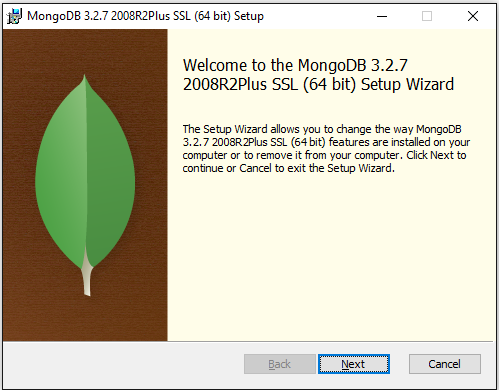
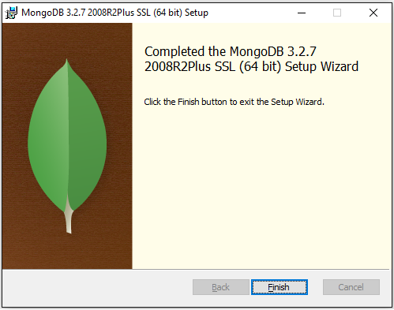
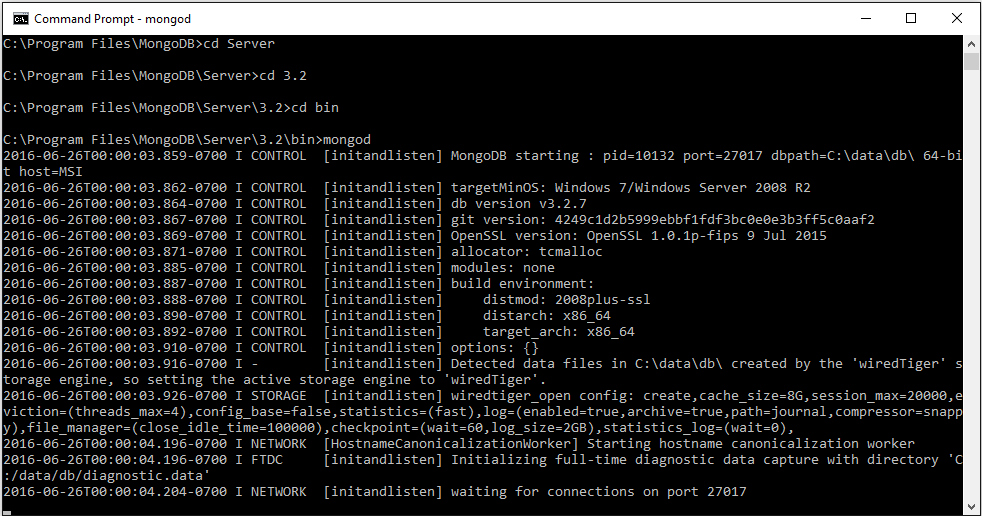
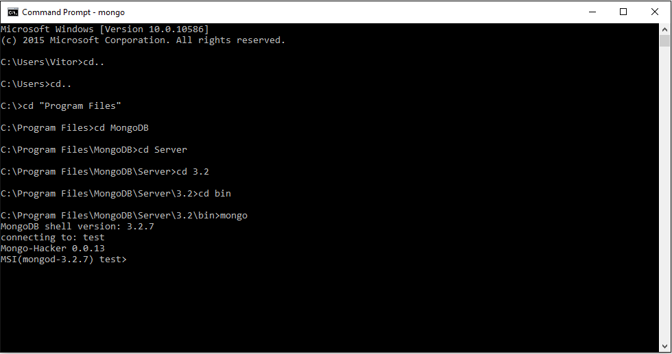
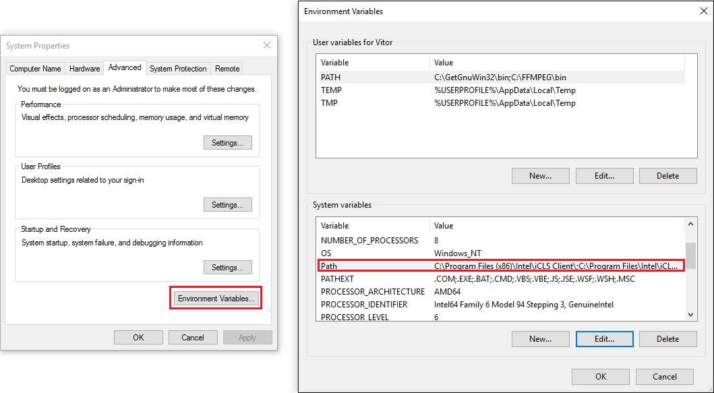
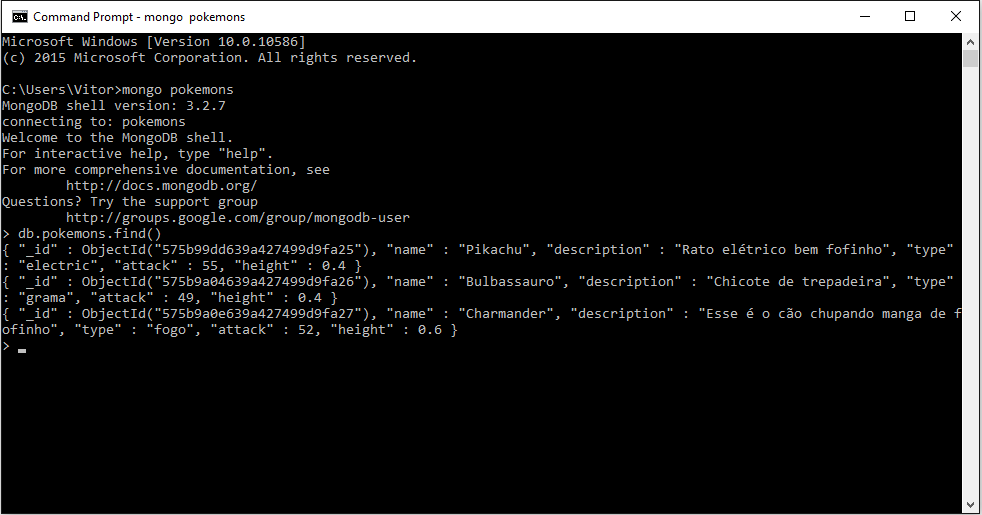
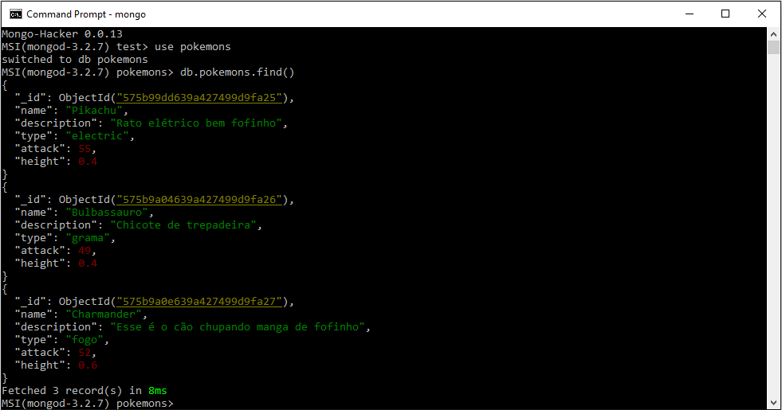

1. Installation
The first part of MongoDB course is the installation, for that you can access here for the last version of MongoDB.
-
After downloading it you can execute it and install it, it is a pretty straight forward installation like any other Windows program (next, next, finish).
 MongoDB Installation - Windows.
Ok, now we have installed the MongoDB Server.
Initial Configurations
If you want to make sure that everything is working you can use your Command Prompt(cmd), or GitBash, or PowerShell to test it. Using cmd and into the installation bin folder we can execute: mongod.
Mongod command usage.
With the server running in localhost port 27017 we can try to connect using another cmd also in the bin folder and execute: mongo.
Mongo command usage.
It will automatically connect in the test database as you can see above.
But opening the cmd and going into the bin folder is pretty annoying so you can configure your Environment Variables to use mongod and mongo anywhere. For that you can access the Advanced System Setting by right clicking Computer in a file-explorer and going to Properties.
After that you can access your Environment Variables and under System Variables you can edit the Path of it. Make sure you put the bin folder of the MongoDB installation in it.
Environment Variables.
Now you are ready to use mongod and mongo as soon as you open your cmd.
Usefull stuff
Cmd is not so friendly to use, you can also use something like Mongo Hacker to improve the way you see your queries and data or you can use softwares like Robomongo a free native and cross-plataform MongoDB manahger to connect to your Database.
I decided to use the Mongo Hacker but when I was trying to use it I had some troubles since it was built in a Unix OS environment, I searched a lot and find a solution grabbing some information in different topics in the Stack Overflow website.
Basically the Mongo Hacker is a configuration file for the color syntax that MongoDB reads when start. You can file my final JavaScript file here and it must be placed under C:\Users\{YourFolder}.
Without Mongo Hacker.
With Mongo Hacker.